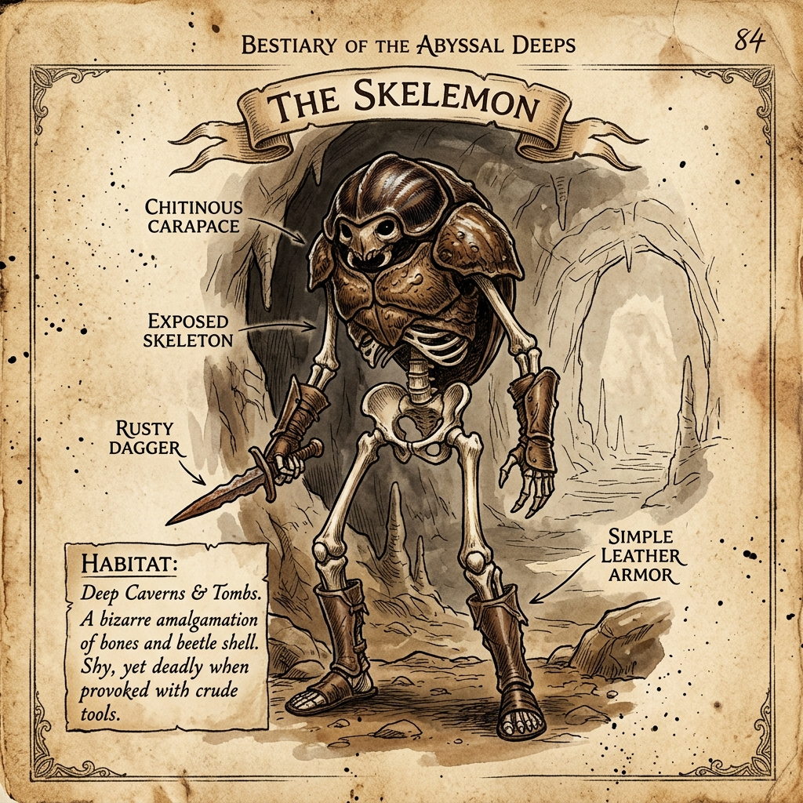

| 類型 | 耐性高 | 耐性低 | 免疫 |
|---|---|---|---|
| 物理 | 斬擊 | — | — |
| 魔法 | 暗 毒 地面 金屬 礦石 | 火 武鬥 天空 自然 水 冰 | 電 |
| 異常 | 中毒 麻痺 | — | — |
骷魔是地底地下城與幽暗洞窟中最常見的活死族魔物。牠們常因灰白的外殼與骨節運動的步態被冒險者誤認為是亡靈枯骨，但實際上牠們是擁有獨特外甲結構且維持著基本生理機能的活體。
骷魔最顯著的生理特徵，是覆蓋於頭部正面與軀幹大部分區域的灰白色外殼。這層外殼因呈現灰白色，常被深入地底的冒險者與學者簡稱為「灰殼」。此外殼並非由體表腺體分泌物固化而成，而是牠們在生長過程中，表皮組織逐漸增厚、硬化所形成的角質外甲。這層外殼質地堅韌，能輕易彈開或滑開刀劍的砍殺。
在外殼之下，骷魔擁有一層暗褐色的皮肉以及流動緩慢的體液。作為活死族生物，牠們雖然維持著呼吸與基本生命代謝，但其生理機能在很大程度上仍需要依賴體內魔力的流動。因為牠們的新陳代謝緩慢，體溫常年維持在 25°C 至 28°C 之間的低溫狀態。牠們擁有一雙發達且能適應黑暗環境的眼睛，視網膜後方具有獨特的照膜，這種能反射光線的眼部結構能極大化地收集並利用坑道中的微光。這雙眼睛在黑暗中會反射出淡淡的黃綠色光芒，便於牠們在漆黑的地道中尋找食物與躲避危險。
在幽暗的洞窟與錯綜複雜的坑道深處，單一的骷魔顯得極其單薄，難以與全副武裝的冒險者抗衡，因此牠們總是成群結隊地行動，以數十隻為一個群體進行捕食與防禦。
當有外來者入侵或遭遇獵物時，骷魔群落會發動如同潮水般的包圍。在面對棘手的對手或遭遇頑抗時，骷魔會主動調動體內的魔力流經全身骨架，藉此短暫地使覆蓋軀幹的灰殼變得更加堅硬，並讓力氣變得更大，動作也更靈活。依仗著這層堅硬的外殼與靈巧的動作，骷魔能承受更猛烈的衝擊，並揮舞手中撿拾來的生鏽鐵劍或輕便短兵器，對目標進行持續且有組織的圍攻與劈砍。這種瘋狂而連綿的攻勢能極大地消耗對手的體力，直到獵物疲憊倒下。在非戰鬥期間，這群魔物主要以地底生長的菌類、富含有機質的腐殖土以及小型活體生物為食，即使面臨地底資源匱乏的窘境，牠們也能藉由體內魔力的緩慢流動維持長期的休眠與存活。
骷魔雖無法理解或吐露人類語言，但表現出了一定程度的工具使用智慧。牠們會收集落入地牢的皮革與金屬殘件，並對其進行剪裁用以包裹自己缺乏外甲保護的柔軟皮肉。日常中，牠們會手持生鏽的鐵劍或輕便短兵器，在領地邊界進行規律的巡邏。
這群地底居民對地表種族抱持著極高的排他性，完全拒絕任何談判或交易。當負責巡邏的骷魔發現人類接近其領地時，會弓起身體發出沙啞的吼叫，並敲擊手中的武器進行威嚇。若入侵者在此時退去，牠們通常會守在邊界，不會盲目追擊；但若警告被無視，骷魔便會發出高亢的嘶鳴召集群落發起包圍進攻。然而，在面對同屬地底的其他掠食魔物時，牠們則展現出冷靜的生存智慧。為了避免在資源匱乏的地底發生無謂的生死衝突，牠們與其他地底生物遭遇時，會以爪刃在岩壁上刻劃出深刻的痕跡，並留下爪縫中殘留的氣味標示地界，從而在避免戰鬥的前提下，達成緊繃但穩定的領地平衡。
繁殖期時，骷魔群落會尋找地勢較高且乾燥的岩洞共同築巢。牠們不具備固定的配偶關係，雌性會傾向尋找外殼厚實、骨架完整的雄性進行短暫配對，以確保產下的後代能長出堅固外殼的特徵。
雌性產下軟殼卵後，群落會將所有的卵統一集中放置在巢穴最深處的集體育幼所保管。群落內的成年個體會輪流留守，守護這些卵免受蛇類或地底囓齒類魔物偷食。
剛孵化出的幼體體型嬌小且較為脆弱，此時牠們全身已覆蓋著一層嬌嫩、尚未硬化的淡粉色表皮。為保護幼體，群落會將牠們安置在巢穴最深處，並由成年個體共同餵食照顧，定時餵食地底菌類與蕈類。
隨著幼體成長，牠們的表皮皮膚會逐步角質化與鈣化，逐漸在頭頂與背部脊椎處隆起並硬化，隨後向四肢延伸，最終形成堅硬的外甲。這一發育過程通常需要三至四年。當幼體的外殼完全發育成熟後，群落會引導牠們拿起撿來的輕便武器，正式參與群落的巡邏與捕獵。
骷魔雖然正面有灰白色外殼防禦，但後腦與腹部並無保護，裸露的暗褐色皮肉一旦遭受精準的穿刺或射擊即可一擊致命。在實戰中，由於其表皮外殼極難散熱，長時間以火焰魔法迫使其處於高溫環境，會導致其內部組織受熱而死。同時，面對成群結隊的包圍，使用具備大範圍衝擊或橫掃效果的法術最為有效，能阻礙牠們輕易合圍，從而瓦解其數量優勢。
在交戰中，骷魔憑藉一種近乎直覺的本能，能隱約察覺到對手身上防護薄弱或致命的部位。這並非出於刻意的戰術分析，而是一種天生的感知特質。
一旦牠們的攻擊命中了這些要害，便能輕易刺穿防具與皮肉，造成遠超其單純肉體力量所能達到的致命傷害。這種毫無預兆的直覺一擊，使得冒險者在面對成群的骷魔時，必須時刻保持警惕。
外殼直接架在篝火上烤，等到聽見『啪』的一聲裂開就差不多了。裡面的肉比我預期的要多，帶點彈性，汁水也還算豐富。味道嘛⋯⋯說真的，跟螃蟹沒什麼兩樣，甚至隱約有點甘甜。這魔物的體溫本來就低，大約只有二十多度，肉質保鮮比一般魔物好處理得多，這點倒是意外的優點。
下次試試帶醬料進去。」